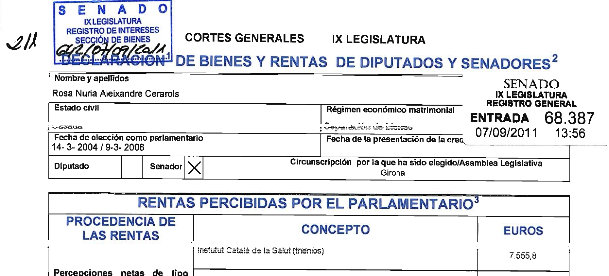
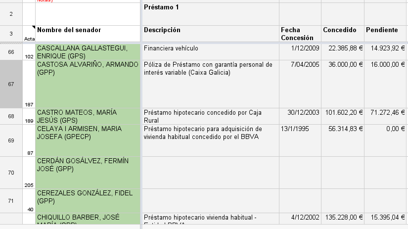
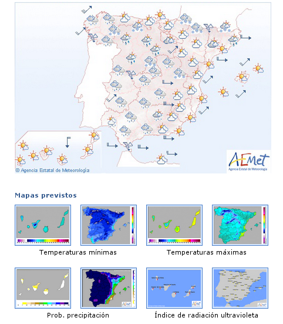
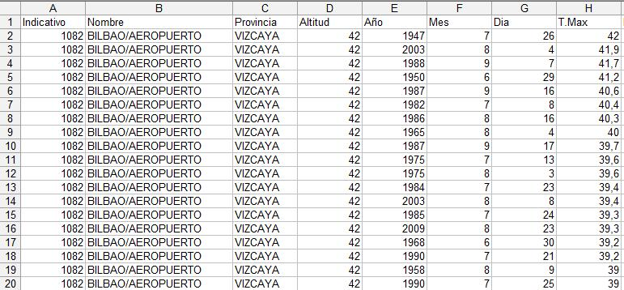
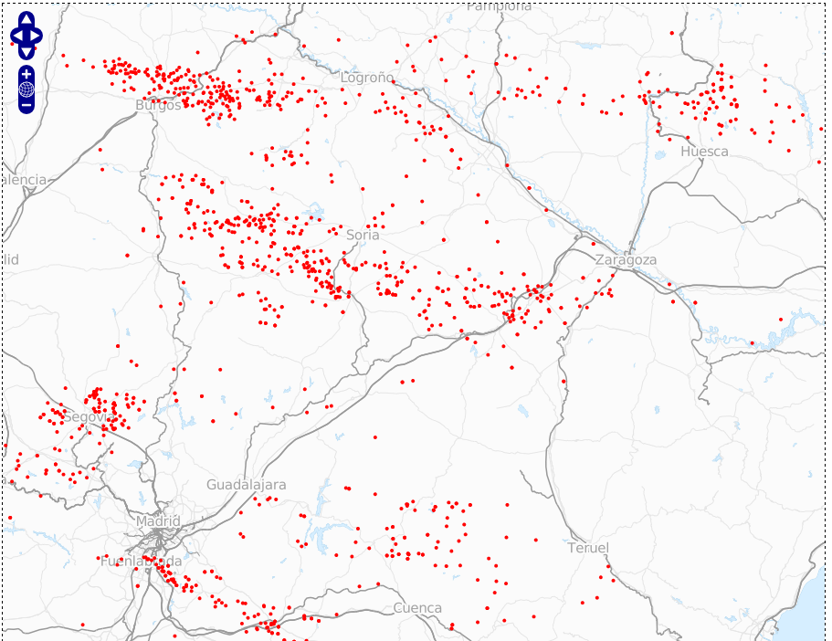
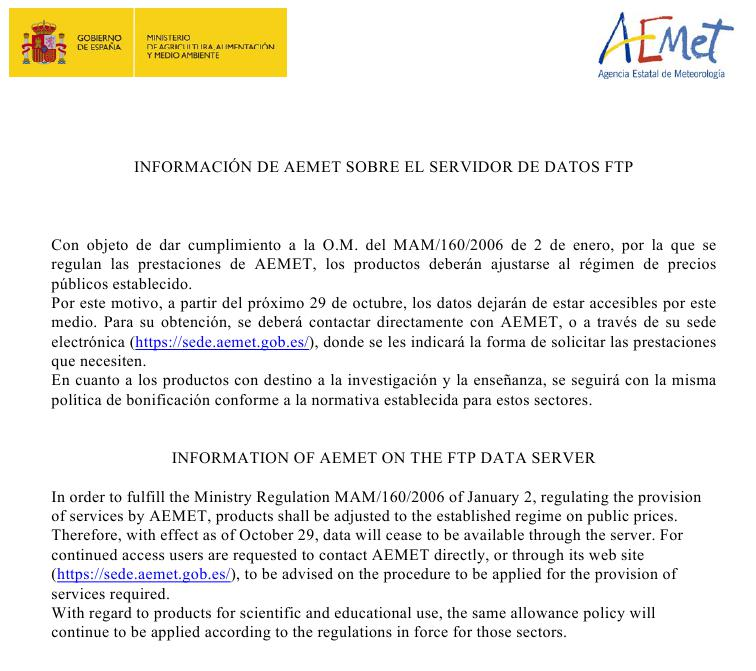
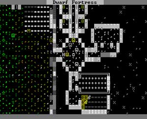
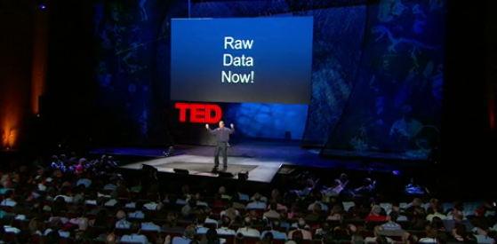
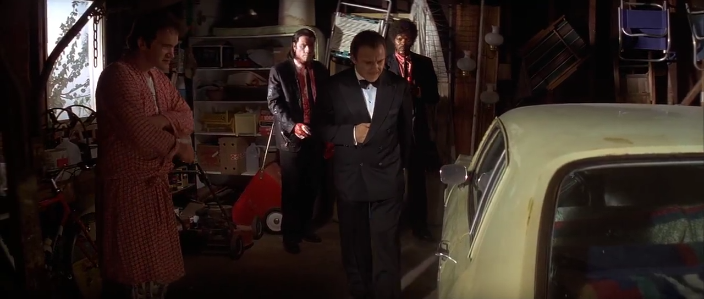

Iván Sánchez
Geomancer
Free/Libre/Open Data geek



http://www.emtmadrid.es/Home/Noticias/Nueva-Linea-Expres-E2-(02-12-2009)-(11).aspx

http://www.aemet.es
http://www.meteopt.com/forum/climatologia/diversidade-climatica-4708-51.html
http://www.iderail.es/2012/11/25/deteccion-de-caida-de-rayos/
https://dl.dropbox.com/u/7679620/SupresionAccesoServidorFtpDatos.pdfSo, Iván,
Why do we need data portals?
Well, you really
DON'T
What you really need is
http://www.printmojo.com/phd/Store/Product.php?ProductID=12631Without data, you get
users
With data, you get
developers,
tinkers
With just a website,
the world has a website
With data,
wonderful things start to happen
With data, you get stuff
you never did think about

http://www.bay12games.com/dwarves/It's like if Tolkien taught your Geology 101 class, but you were drunk and playing the Sims during the lecture. Then you had a dream that got them all confused.
I'm not the only one saying this

http://www.ted.com/talks/tim_berners_lee_on_the_next_web.htmlWould you visit your own map portal if there was a simpler, faster alternative?.
Some of the best geoportals I came across were also the simplest, offering bulk access endpoints on anonymous ftp servers.
Quiz! Which movie? Which scene?
